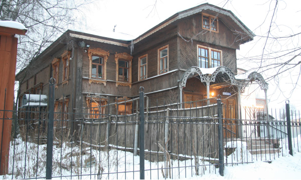
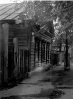

Chabad Victory in Kostroma
Rabbi Nison Ruppo arrived in Kostroma in the winter of 5753. The Rebbe Rayatz had been exiled to this city by the communists and he remained there for about ten days. Kostroma has a high assimilation rate, and yet the community is aware of the Chassidic history of the city and is proud of the fact that the Rebbe stayed in their community for ten days. * A Yud-Beis Tammuz interview with a shliach.

“There are only a few families here where both parents are Jewish. We find the children whose mothers are Jewish and try to save the next generation by having them marry Jews,” says the shliach, R’ Nison Ruppo.
About ten years ago the shul in which the Rebbe Rayatz davened in during his exile, which was under lock and key for many years, underwent major renovations and was officially reopened. Once again, the Jews of Kostroma could be proud. A touching moment during the celebratory farbrengen was during the speech of the shliach and chief rabbi of Russia, Rabbi Berel Lazar.
“A few weeks ago, I met the president of Russia who promised to provide the Jewish museum with one employee’s salary from his personal money. This is not the first time he is making a donation, but it is the first time that he is donating from his personal salary.
“Today, Yud-Beis Tammuz, I was informed that the money was transferred. Today, on Yud-Beis Tammuz, the Chag Ha’Geula of the Rebbe Rayatz, we were shown another aspect of the tremendous revolution taking place here in Russia. Russia has become an open supporter of Jews,” said R’ Lazar to the applause of the crowd.
That festive event marking the opening of the shul was precisely 80 years since the Chag Ha’Geula and 100 years since the founding of the shul in Kostroma. Since the galus and Geula of the Rebbe Rayatz in this city, Kostroma probably did not see a gathering of Jews such as this with public figures coming to honor the Jewish community. The heartwarming sight of the district leader alongside the rabbi of Russia, the mayor, local government representatives together with shluchim of the Rebbe, stood out on this very special Yud-Beis Tamuz 5767 in Kostroma.
R’ Lazar’s speech was broadcast on a number of stations. He pointed out that, “Aside from 80 years since the Chag Ha’Geula and 127 years since the birth of the Rebbe Rayatz, if we break down the number 127 we see that it is 100 years since the founding of the shul, 20 years since Judaism has been flourishing in the CIS, and 7 years since R’ Ruppo began working in Kostroma.”
The mayor said, “Jews can now operate with their heads held high, without fear.”
RUSSIAN CHILDHOOD
Kostroma is the city closest to Moscow. With his shy smile, R’ Ruppo pointed out that he is the shliach who is closest to the center of shlichus in Moscow. He himself was born in Moscow 34 years ago.
“Boruch Hashem, both my parents are Jewish, but their world view was no different than many other Jews who intermarried. The only Jewish thing I knew was that we are Jews and we bought matza once a year for my grandmother who ate it together with bread.
“I attended the schools of goyim, ate their food, celebrated their holidays and generally did not feel any different than them. I remember that when I was older, I went with my mother to the big shul in Moscow to buy matza for my grandmother. This was during the period when communism was already waning and the line for matza was longer than usual. In general, there was a tremendous interest in Judaism at the time, especially among the young generation who eagerly swallowed up any information on Yiddishkait, the Jewish people and Eretz Yisroel.
“At a certain point, the person in charge announced that they had run out of matza, but not to worry, because there would be a new supply on Sunday. He promised that they would be baking more matza on Saturday. To the few who said it was forbidden to work on Shabbos, a fact which many knew, as did I, he said: Jews won’t be baking the matza, gentiles will. Ignorance was widespread.
“My mother once told me that she had stomach problems and since she began eating kosher, the problems stopped. I did not know what kashrus was and my mother tried explaining that it was only permissible to eat vegetables and meat slaughtered by a Jew. Those were the first Jewish concepts that I learned.
“When I was bar mitzva, I celebrated a little and that was only because of the prevalent spiritual arousal at the time. If my bar mitzva would have been a few years earlier, it would not have been marked at all. I raised a cup of champagne and my father explained that in Judaism at this age you become an adult.
“When I was fourteen my mother took me to a shul for the first time. Most of the Jews who went to shul remained outside. Inside there were a few Jews who read in a language that was unfamiliar to me. The service was more of a Jewish social event and display of Jewish identity than t’filla. People simply did not know anything. A few remembered something from their grandparents. I remember how one day, my mother brought home a booklet about the mitzva of mezuza and it mentioned the Lubavitcher Rebbe. I asked who he was but she did not know.
“In the summer of 5753, I was registered for day camp with the Jewish Agency. They did their best to convince Jews to make aliya. There was no Judaism in camp; it was more about identifying with Israel. When camp was over my mother registered me for Camp Gan Israel. She had gone to the principal of the Jewish school, and he had suggested that before school began it would be a good idea to send me to camp.
“I received my first, massive dose of Judaism in camp. On the first day, I wore tzitzis and on the second day, I put on t’fillin. On the third day, I agreed to undergo a bris. The interest was so enormous that out of seventy children who attended camp, 56 of them had a bris on the same day. Only three declined and the rest were already circumcised.
“I finished camp having resolved to keep kosher. I did not know much about kashrus, but I was given pamphlets and when I went home, my mother thought it was a passing fad like many of my childhood meshugasin. She soon realized that I was serious about it.
“I attended the school of R’ Kurevsky for a few months where I learned Hebrew, among other things, but this wasn’t enough for me. I then attended Yeshivas Tomchei T’mimim in Marina Roscha.”
The Ruppo family made aliya in the winter of 5753 and settled in Petach Tikva. R’ Lazar sent a letter with Nison to the shliach there, R’ Binyamin Rabinowitz, asking him to put him into a school suitable for a Chassidic boy. However, Nison’s mother insisted that he do his matriculation. She even went to the Kosel for this purpose, putting a note in the wall. Nison lasted only a few months in the yeshiva high school Kfar Ganim.
“One of the graduates of the yeshiva in Nachalim who became interested in Chabad, R’ Matti Brandwein, taught a Tanya class there. I liked it and I asked my mother to send me to yeshiva. That is how I ended up in Ohr Simcha in Kfar Chabad. Many young Russian kids learned there and the atmosphere was special. I learned there for a year and a half and from there I went to the yeshiva in Tzfas which shaped my life and my shlichus. During the two years that I learned there I was given the foundation for my Chassidic life. My feeling of hiskashrus to the Rebbe I owe to the rabbanim and mashpiim in that yeshiva.”
LETTER FROM THE REBBE
In 5757, as a talmid of the yeshiva in Tzfas, Nison went on Merkos Shlichus to cities in Russia. He began his trip in Nizhny Novgorod and also visited Kostroma, which is considered a small city with only a quarter of a million people and not a large Jewish community.
“I was surprised to see an active shul while in other cities of the CIS that had bigger communities, there were still no shuls. Although it was a small city, some Jews decided to open a shul that would serve as a Jewish center. R’ Moshe Tamarin of Moscow would come occasionally to support the Jews of the community.
“After some days of shlichus there, I continued on my way. I did not imagine that I would come back to live there.
“In 5759, I went on K’vutza to 770, after which I did not know what to do next. I very much wanted to continue spreading Chassidus in Russia, but I had some good offers for outreach positions in the US. On the one hand, all the terms that I was promised in America were tantalizing; on the other hand, I knew that in Russia I would be able to do my best work. I wrote to the Rebbe and opened to an answer in volume 18 of Igros Kodesh, page 90. I couldn’t have asked for a clearer answer. The Rebbe negated the suggestion to work in New York and sent me to places that really needed me.
“When I finished learning for smicha in 770, I went to work in the mesivta in Moscow. There were seven students at the beginning of the year; by the end of the year there were twenty students. We put a lot of effort into educating them and urged shluchim to send more talmidim. Today, I meet some of them, real T’mimim, but back then we had to teach them everything from the ground up.
“A year later, I was appointed as the rosh yeshiva of the yeshiva that had opened in Donetsk. At the end of the year I returned to Eretz Yisroel where I was drafted.
“When I finished my military service I returned to Moscow. I asked R’ Lazar, who knew me well, to give me a city where I could work on a permanent basis. I was given Kostroma, a small city, but a location with a lot of potential work. I didn’t have to do much research, because I already knew the place from my previous visit. I left that same day.
“The community had asked for a permanent shliach in the past, but due to the size of the city, they had preferred sending shluchim to larger cities. R’ Lazar then decided that the time had come for this city, which is significant in Chabad history, to have a shliach.
“We arrived there on 27 Adar 5760. The first thing we did was make a Jewish summer camp for families. I remember that the first Jewish family we visited was a family I had met in Liadi at the beginning of my Merkos Shlichus trip. They told me back then that they lived in Kostroma.
“Their ignorance of things Jewish was so vast. She told me that 16 years earlier, the community decided to pull themselves together; they had asked the Jews of the city to come to the shul on Shavuos. On the table in the lobby of the shul was a paper and pen so everyone could sign in.
“Two years later, on Pesach, the community rented a hotel nearby that was run by a local Jew. The community organized buses on Yom Tov. That woman had a strong feeling for Judaism and she knew that on Yom Tov and Shabbos you bake challos. Over Yom Tov, she baked challa from an authentic Jewish recipe. This woman is a doctor of biology and works in the dairy industry. After we had settled in the city, she asked me how one koshers milk.
“I asked her why she was asking and she said it was because she noticed we did not drink milk and she wanted to bring us milk from her place of work. I told her that she had to be Shomer Shabbos in order for us to drink the milk. She asked me what I meant and I briefly explained and added, ‘If you keep Shabbos, we can drink the milk that you milk yourself.’ She took me seriously and began keeping Shabbos. At a later point, she and her sister, a university professor, committed to keeping kosher.
“Because of her work, she moved to another city and left us her apartment so we could open a preschool. She made aliya a few years ago and settled with her family in Yerushalayim. I recently visited them and they are a beautiful religious family. She has six grandchildren and her son learns in kollel all day. I ate in her home and thought about how far they had come and what a difference the Rebbe made in their lives.
“There are many other families in Kostroma, like this family, that have become stronger in Torah and mitzvos, but unfortunately, every family that makes significant strides in this way leaves the city.”
CHANGES IN KOSTROMA
R’ Ruppo has a daunting task in uniting the community and fighting assimilation.
“The problem of assimilation is enormous and it exists throughout the former Soviet Union. We work with whomever there is; Jews will learn the 613 mitzvos with us and gentiles will learn the Sheva Mitzvos. People here know that if they are not Jews according to Halacha, even if they regularly attend shul, they will not get an aliya to the Torah or any other honors. We work hard with Jewish youth so that at least, in the next generation, there will be fewer instances of intermarriage, but the situation is bad.”
R’ Ruppo and his wife run a shul which is a Jewish center, as well as directing a preschool and a Sunday school. A large percentage of the Jewish community participates in his programs. The shliach also runs camps and seasonal programs throughout the year along with weekly shiurim for boys and girls. The community runs a museum and a Jewish library with many Jewish books translated into Russian. There is also organized humanitarian aid which includes food packages for the needy.
“I am the father and mother of the k’hilla in every way, from the smallest thing to the biggest.”
Every year, R’ Ruppo sends groups of boys to Moscow for brissin. Many people have committed to kashrus and t’fillin. This is how a Jewish community that was nearly wiped out comes to be flourishing anew.
“In the area of Kostroma there is a special artistic metalworking school, which is attended by students from all over the world. One day, an Israeli fellow of Caucasus origin came to me. His name is Shmuel Shmailov. He had won the Israeli championship title in wrestling, and worked as a metalworker. He came to the school in order to study the craft. Before coming here, he became involved with Chabad in Rechovos; they referred him to us. He told me that he first heard about Chabad from two fellow wrestlers, Georgians. The relative of one of them is a big donor today to Chabad in the CIS. He comes to us on Yom Tov and Shabbos, walking all the way.
“There is another young religious man with a beard and tzitzis, originally from Russia, who learned about Judaism in the US while studying Chinese medicine. When he completed his studies, he went to Kostroma in order to heal people using the Chinese method. He sees this as his mission. He also comes to us every Shabbos, walking hours each way, and availing himself of all the community’s services as though he lived in B’nei Brak or Yerushalayim.
“When I look back over the twelve years we have been working here, I can’t help but get emotional. Quite a few families changed their way of life and have become religious. The only sticking point is that they leave for Eretz Yisroel.”
When on shlichus in a city like Kostroma, history plays a part in day to day activities.
“There are still descendents of R’ Kugel in Kostroma. He is the one who hosted the Rebbe Rayatz during his exile. The Rebbe, in one of his sichos, referred to the joy of R’ Kugel’s son when he heard of the release of the Rebbe and how he climbed a fence and stood on his hands. R’ Kugel had a daughter, Raizel (see box), who was 12 at the time and is around 100 now. She made aliya and lives in Beer Sheva. Her mind is clear and she has six grandchildren. Four grandchildren made aliya with her and the other two live in Kostroma. The great-grandchildren learn in our preschool and take part in all our programs. We sent one of her great-grandchildren to learn in the mesivta in Moscow. We sent another great-grandchild, Esther, to Moscow. However, she didn’t fit in there, so we opened a special class for her and brought a woman to learn with her. A year later, she made aliya with her parents and they live in Beer Sheva near her great-grandmother. She attends the Chabad School there.
“It is moving to see how the Rebbe paid them back. R’ Kugel hosted the Rebbe for a few days, but shortly after the Rebbe was released, he was arrested and accused of underground Jewish activity. He died in exile in 5705/1945. Today, despite the upheavals that many of his descendents experienced, many of them are connected to Lubavitch.”
EXTRAORDINARY STORIES OF HASHGACHA PRATIS
From the moment R’ Ruppo arrived in Kostroma, he realized that it wasn’t he but the Rebbe who was running his shlichus. He sees this, he says, every step of the way, whether it is money that comes just when he needs it or a string of astonishing hashgacha pratis events:
“On my first day here, the members of the k’hilla asked me to arrange a summer camp for families. The Joint had paid for it until then. We still needed $5000 in order to rent a place. It was on the last day that the money arrived and the camp got under way.
“I always say that shluchim don’t just feel hashgacha pratis, they see it. We have experienced numerous stories of our own. Sums of money we didn’t dream would come came from unexpected places just at the right time. One day, someone came to us in shul who said he had once worked in the Russian military building nuclear submarines. There were two other Jews with him, and one day they were all fired. Why? The manager asked the one in charge of the branch why the submarines were not ready and his answer was: We have three Jews in key positions and they are delaying the completion of the subs.
“It was a few days before Purim. This businessman introduced me to his son. During our conversation, he asked me for the bank account number of the community and we parted ways. A few days went by and it was before Pesach. The money we were supposed to receive to cover holiday expenses for the community was delayed. It was days before Yom Tov and we didn’t know what to do. Even if the money would be deposited, we wouldn’t be able to use it before Yom Tov. We were at a loss as to what to do. My wife agreed to use our personal salary that we had gotten a few days earlier, and even if it wouldn’t cover all our expenses, at least it would help somewhat.
“The next day, before I left the house for the bank, the k’hilla’s accountant called me and told me about a large sum of money, 100,000 rubles, which had been deposited into the bank. He did not know who had made the deposit. I asked him for the name of the donor and when he said the name, I was reminded of the man and his son. The son, it turned out, had made the donation. I was overcome with emotion. I knew that Hashem had arranged it all. He saw that we were willing to forgo our own money for the community and arranged for that entire amount plus much more. When that man came to attend the Seder, I said, ‘See all this? It’s because of your son’s contribution.’”
RECLAIMING THE PAST
Kostroma was one of the cities outside the Pale of Settlement. Jews without a permit were not allowed to live there. Only those Jews with needed professions were able to obtain a permit. Of course, a rabbi was not one of those professions recognized by the government.
“Under the communists, the government would appoint a rabbi who was responsible for Jewish matters. This government-appointed rabbi was not religious. When Jews asked for a rav, the government would tell them they already had a rav.
“One day, R’ Tzvi Hirsch Friedman came to town. He was a distinguished Torah figure. In order to obtain permission to remain in the city, he announced that he was setting up a weaving factory. His brother sent him a weaving machine and he employed two gentile women who worked for him while he devoted himself to running the Jewish community.
“The new law of the present era, after communism, states that all religious buildings must be returned to members of that religion. Many religious buildings, which had been confiscated under communism, were returned to Jews. We submitted a request to receive the house of the rav too, but it wasn’t simple since he was listed as the owner of a weaving factory. We spoke with the mayor and she managed to arrange the building for us for one year, which was then extended to five years. We still didn’t renovate the building, because we were afraid that it would be taken back from us.
“Thanks to R’ Lazar’s intervention, we were able to get the building for forty years. Then we did a massive renovation. In 5767, eighty years since the release of the Rebbe Rayatz, we dedicated the building and put the preschool in there. The mayor, who is not Jewish, was invited too. In her speech, she said she knew about all the problems the Jews had back in the day, which made it necessary for the rav to hide his true job, ‘and today we have R’ Nison who works openly and we are happy about this. We will do all we can to help him.’”
What is it like to work in the city which received the news of the Rebbe Rayatz’s release?
It feels special. I feel it not only on the day of his Geula each year, but every single day. Although the shul underwent renovations, we left the original paint that was there when the Rebbe davened there. I live a minute’s walk away from the house where the Rebbe stayed. In the center of the city there is still a KGB building where the Rebbe received his release papers. So I am always surrounded by memories.
People meet and see the descendents of R’ Kugel, with whom the Rebbe stayed. We are constantly living with it. Not just me, but all the members of the community. On the wall in the entrance hang documents from the archives that we were able to get hold of concerning the Rebbe’s stay in the city and his release document. At every meeting of district officials, I am invited to speak on behalf of the Jewish community. What could be a greater transformation than that?
***
The granddaughter of R’ Kugel told us that the previous mikva was in the shul. When we renovated the kitchen, we found the mikva. It seems it’s the mikva that R’ Michoel Dworkin fixed in anticipation of the Rebbe Rayatz’s arrival and it is the mikva that the Rebbe used when he was here.
How do you spread the message of Moshiach in this spiritual desert? Do you talk about it?
We are constantly talking about Moshiach! Boruch Hashem, talking about Moshiach doesn’t bother anyone in Kostroma. It’s like any other mitzva. And anyway, what is Moshiach? When a Jewish woman whose father and grandfather, four generations of gentiles, convinces her husband to be circumcised, that is Geula. When a woman wants to have a wedding under the open sky because she heard it is a minhag, that is Geula. When not just old people but young people – people who knew nothing about Judaism – also come to shul, that is also Moshiach.
In conclusion:
We have an active shul, mikva, preschool and other amenities. We plan on going forward, continuing to raise awareness about bris mila and Jewish marriage. Sadly, the youngest woman with two Jewish parents who plans on marrying a Jew is forty years old. I can promise you that the entire community will be invited to her wedding.
THE HOUSE THE REBBE LIVED IN

The house was located on 3 Nikitaskaya Street in Kostroma and was razed forty years ago. The granddaughter of the shochet, R’ Yerachmiel Kugel, in whose house the Rebbe stayed, brought the picture to R’ Ruppo. She discovered the picture after many years had passed.
The shochet’s daughter, Mrs. Rosa Melamed, recounts what she remembered:
“I remember that when the Rebbe arrived in Kostroma, there was excitement and commotion in the city. Even the goyim came out to see the ‘Man of G-d.’ I remember how people stood on the rooftops and outside the fences. We hosted the Rebbe and his escorts. It was a big house and the Rebbe was given a room.
“I even remember that there were people who wanted to see the Rebbe, and one of them, who wanted this very much, was even received. After his release, the Rebbe was given an entire compartment on the train that brought him back from Kostroma. In the interrogations of my father which were conducted later, his hosting the Rebbe and his escorts came up. This even appears in the KGB file on my father. He was given ten years in Siberia.
“My father was a Chabad Chassid, shochet, and mohel. He was needed in the city and surrounding towns and was asked to do brissin even in Leningrad and Moscow. After the shul was closed, a minyan was held in our house even though the government had confiscated the Sifrei Torah.”
Nosson Avrohom. "Chabad Victory in Kostroma." Beis Moshiach, no. 883 (June 12, 2013).